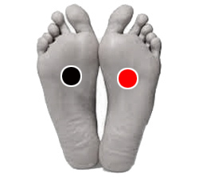

Espolón - pie plano
Par
metatarso - metatarso

Generalidades:
Probar para tratar espolones o pie plano.
El espolón calcáneo es una osificación (protuberancia) que aparece en el talón causando dolor punzante y dificultando el andar. Se puede deber a estar demasiado tiempo de pie, tener sobrepeso o usar calzado inadecuado. Los ejercicios para estirar la parte posterior de las piernas, en especial el tendón de aquiles pueden ayudar a revertirlo.
El pie plano es la falta del arco del pie, se puede comprobar en la huella del pie. Esto trae problemas en toda la dinámica y estructura osea pudiendo ocasionar problemas de columna y cansancio al caminar. El pie plano se debe a la falta de tono y fuerza en los músculos y tendones que conforman el pie. También es recomendable el uso de plantillas y la práctica de ejercicios especiales. Si la persona no sufre dolor o molestias por lo regular no es necesario tratamiento.